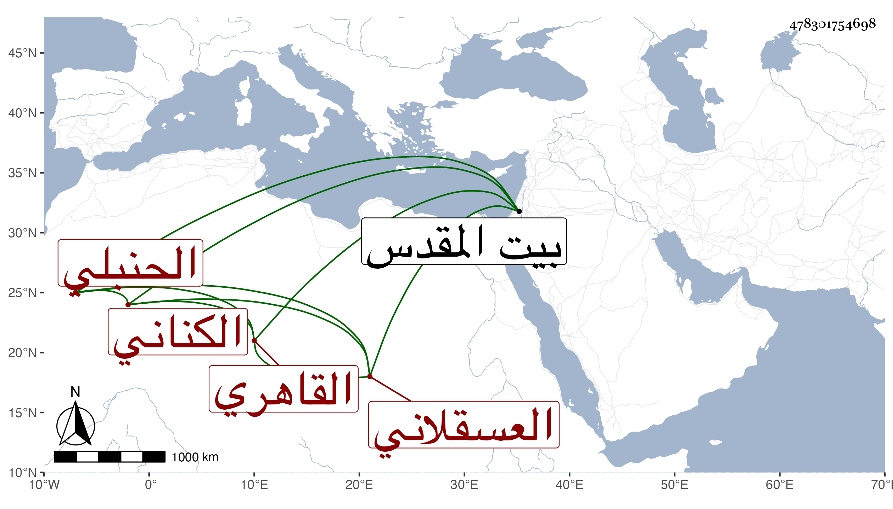

0902Sakhawi.DawLamic.ITO20230111-ara1.EIS1600.478301754698
Biography ID: 478301754698
41
ألف ابنة عبد الله بن علي بن محمد بن علي بن عبد الله بن أبي الفتح بن هاشم بن اسماعيل بن إبراهيم بن نصر الله بن أحمد أم أبي سهل ابنة الجمال بن العلاء الكناني العسقلاني الأصل القاهري الحنبلي أخت أحمد الماضي ، ولدت تقريبا سنة اثنتين وثمانمائة ونشأت في خير وصيانة وأسمعت على أبيها وغيره وأجاز لها جماعة وتزوجت بابن عم لها ثم بابن عمار وانجب ولده أبا سهل منها ، وحجت مع ولدها مرتين جاورت في الثانية منهما بعض سنة وكذا زارت معه بيت المقدس ؛ وحدثت سمع منها الفضلاء قرأت عليها ثلاثيات مسند أحمد . وكانت خيرة متعبدة . ماتت في ربيع الثاني سنة تسع وسبعين ودفنت جوار قبر زوجها وقبر ابن عمتها العز الكناني بحوش قريب تربة كوكاي رحمها الله وايانا .
